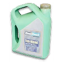
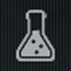
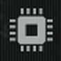

Mirae General Hospital
Mirae General Hospital MW4 DMZ: langelis F5, grėsmė – žema, 3 raktai, čia randami daiktai, DMZ Orders ir artimiausi išvykimo taškai.
- Grėsmė
- žema
- Langelis
- F5
- Smulkiau
- Žema.
Raktai 3
 Hospital Chemistry LabMirae General HospitalF5
Hospital Chemistry LabMirae General HospitalF5 Mirae Electrical RoomRare · Mirae General HospitalF5
Mirae Electrical RoomRare · Mirae General HospitalF5 The Doctor's Command OfficeLegendary · Mirae General Hospital, floor 7F5
The Doctor's Command OfficeLegendary · Mirae General Hospital, floor 7F5
Čia randami daiktai 5

Binding CatalystIngredients BiomaterialsIngredients
BiomaterialsIngredients
ChemicalsResources
ElectronicsResources Stabilized ReagentsIngredients
Stabilized ReagentsIngredients
DMZ Orders šioje vietovėje 2
 Operation Critical ExtractionHuman Intel 2/2 · 1 tikslas
Operation Critical ExtractionHuman Intel 2/2 · 1 tikslas- Operation Critical ExtractionSiužeto užduotis · tikslų: 5
Artimiausi išvykimo taškai
- G4Exfil: Russian Border Crossing (East)
- E5Exfil: Cheongun Village
- E4Exfil: Cheongun Outskirts
Žiūrėk žemėlapyje DMZ Tactical programoje